What is PointAlgo?
PointAlgo is a quantitative trading intelligence platform built for traders who want speed, accuracy, and logic — not guesswork.
We don’t believe in cluttered charts or emotional decisions. We believe in structured signals backed by data and logic.
Speed
Markets move fast — your decisions should too.
PointAlgo delivers real-time signals so you can act instantly without hesitation.
Accuracy
Every signal is designed to filter noise and focus on high-probability setups.
No random indicators — only refined, tested logic.
Logic
Behind every signal is a clear, rule-based system.
No black-box confusion — just disciplined, repeatable trading frameworks.
What is TradingView?
The world's leading cloud charting platform. Analyze markets from any browser with PointAlgo's invite-only scripts.
- Cloud-based charting
- Real-time alerts
- Custom Pine Scripting
- Mobile/Desktop Sync
What is MT5?
MetaTrader 5 is the industry standard for stable execution and automated Expert Advisors (EAs).
PointAlgo provides custom .ex5 indicator files for MT5, allowing you to bridge the gap between analysis and direct market execution.
What is Algo Trading?
Algorithmic trading is the process of using a pre-defined set of rules (an algorithm) to execute trades. Instead of clicking buttons based on intuition, the system monitors market conditions and executes according to Binary Logic.
What are Quants?
Quantitative Analysts use mathematical and statistical models to predict market probabilities. At PointAlgo, we turn complex Quant math into visual, easy-to-trade indicators.
Gann-Pi Matrix (Cross Edition)
Gann-Pi Matrix is a structured trading indicator designed to identify high-probability price zones and timing windows using a combination of price geometry and cyclical behavior.
It provides traders with clear, rule-based entry signals by aligning price levels with time-based market cycles. The result is a simplified decision-making framework that removes guesswork and focuses on actionable signals.
TradingView Interface
Live Setup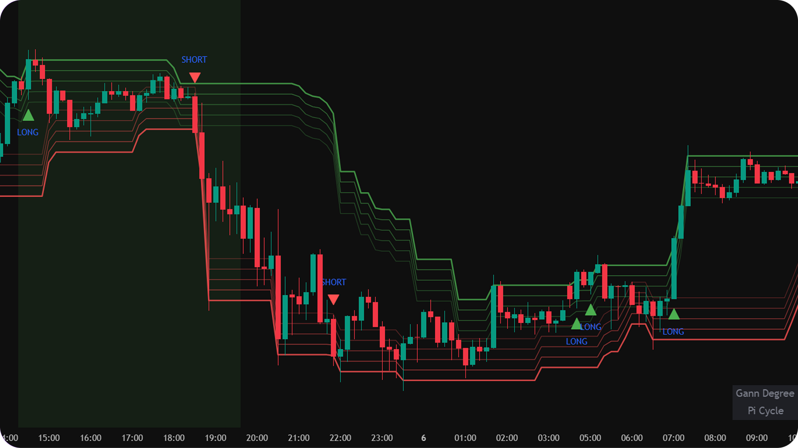
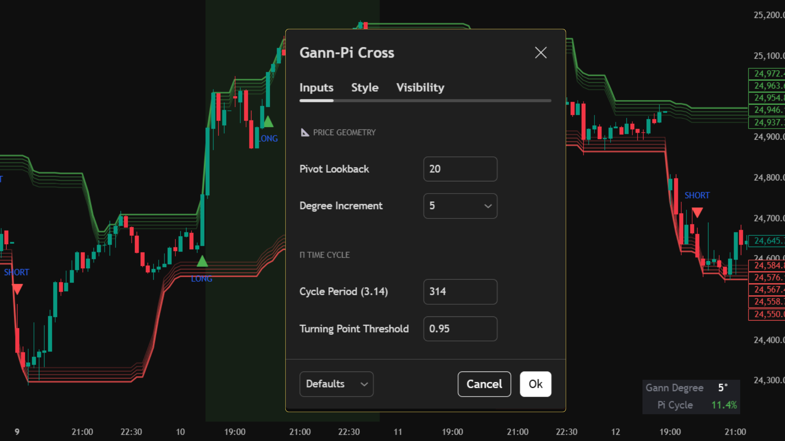
Core Use Case
- Identify precise entry points for long and short trades.
- Trade reversals from structured support and resistance zones.
- Align trades with favorable market timing conditions.
- Reduce noise and avoid over-analysis.
Key Benefits
- Clear and objective trading signals.
- Eliminates emotional decision-making.
- Combines price and time for better trade alignment.
- Works across multiple markets and timeframes.
- Minimal chart clutter with maximum clarity.
What You See on Chart
How to Use
Long Trades
- • Wait for a long signal to appear on the chart.
- • Ensure price is reacting near a support zone.
- • Prefer trades when the market is in a favorable time cycle.
Short Trades
- • Wait for a short signal to appear on the chart.
- • Ensure price is reacting near a resistance zone.
- • Prefer trades when the market is in a favorable time cycle.
MT5 Platform View
Terminal Mode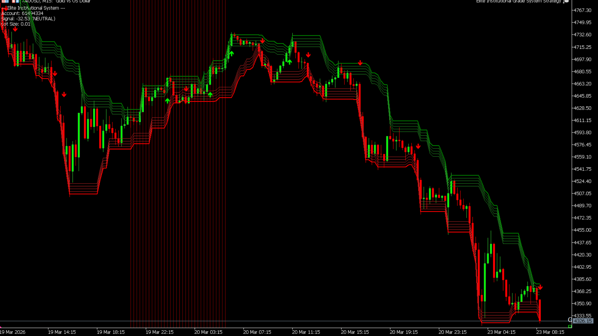
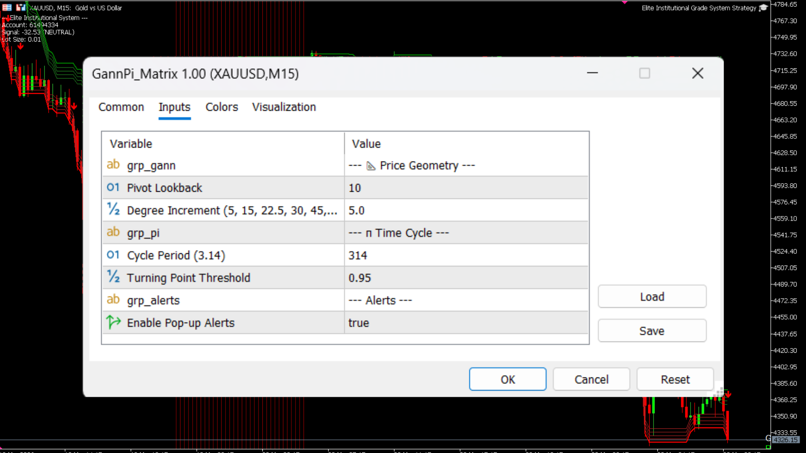
Best Practices
- • Use on liquid markets (indices, stocks, futures).
- • Avoid trading during extremely low volatility periods.
- • Follow proper risk management for every trade.
- • Combine with higher timeframe direction for better accuracy.
Who is this for?
- • Traders looking for structured, rule-based entries.
- • Traders who want to avoid indicator overload.
- • Beginners who need clear buy/sell signals.
- • Advanced traders seeking disciplined execution.
Summary
Gann-Pi Matrix is built for traders who want clarity over complexity. It simplifies market analysis into structured levels and actionable signals, allowing you to trade with confidence and consistency.
Adaptive Auto-Fib Matrix v2.0
An intelligent, dynamic Fibonacci engine that auto-anchors to structural pivots and hunts for institutional liquidity sweeps within the Golden Zone.
This indicator removes the subjectivity of manual charting. It automatically calculates structural high/low pivots, draws the retracement matrix, and uses a Volume-Weighted RSI (VRSI) to confirm momentum. Furthermore, it is fully equipped with Algobaba Order Routing for automated Futures and Options execution.
TradingView Interface
Live Setup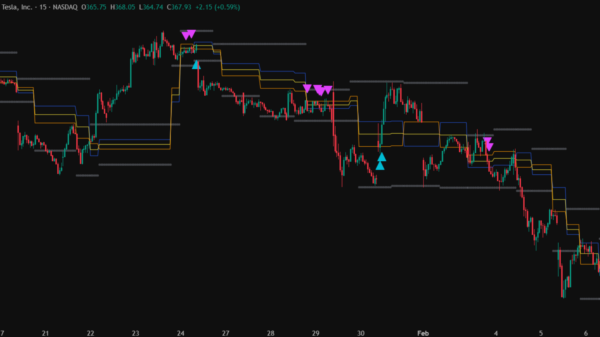
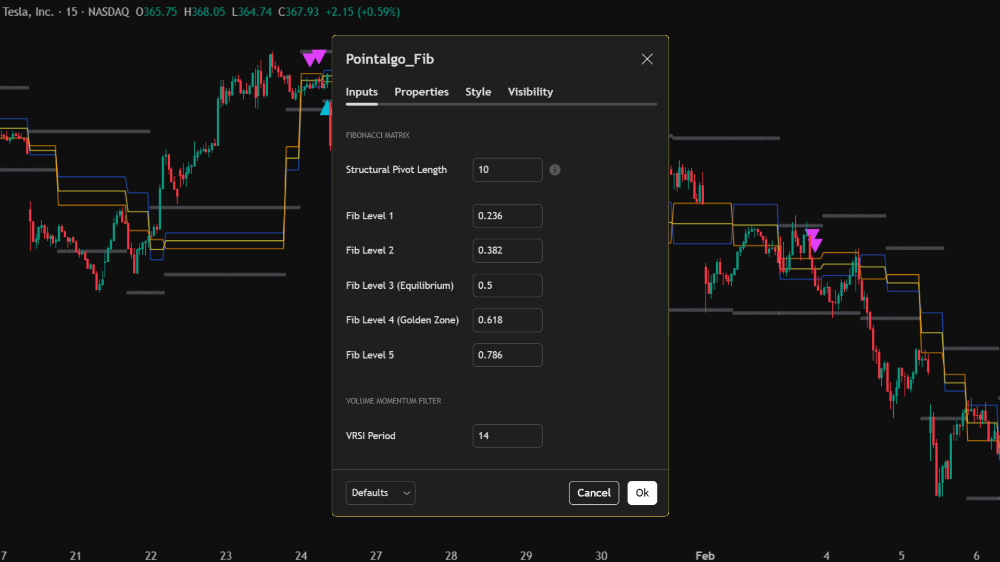
Core Use Case
- Trade high-probability pullback reversals via Liquidity Sweeps.
- Automate the drawing of objective Fibonacci retracements.
- Filter out fake breakouts using Volume-RSI momentum.
- Automate end-to-end execution via built-in Algobaba routing.
Key Benefits
- No manual charting—pivots adapt instantly to live market structure.
- Golden Zone focus (0.500 - 0.618) keeps you in prime trade areas.
- Built-in dynamic risk management (Target & SL auto-calculated).
- Options & Futures ready (CE/PE strike routing included).
- Intraday and Positional session controls.
What You See on Chart
Signal Logic: Liquidity Sweeps
Long Sweep
- • Trend direction is recognized as UP.
- • Price pulls back and wicks *below* the 0.5 or 0.618 level (trapping early sellers).
- • Candle closes strong *above* the level.
- • VRSI is Bullish (> 50) to confirm momentum.
Short Sweep
- • Trend direction is recognized as DOWN.
- • Price rallies and wicks *above* the 0.5 or 0.618 level (trapping early buyers).
- • Candle closes weak *below* the level.
- • VRSI is Bearish (< 50) to confirm momentum.
MT5 Platform View
Terminal Mode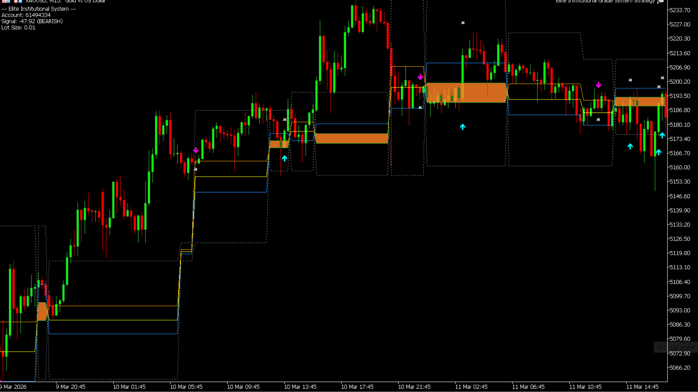
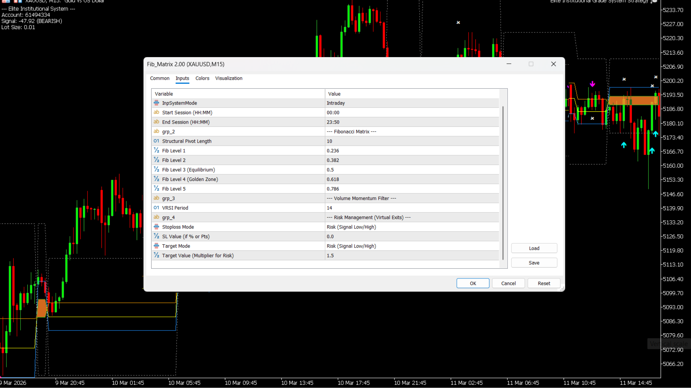
Best Practices
- • Adjust "Structural Pivot Length" (lower for scalps, higher for swings).
- • Rely on the VRSI filter to avoid trading into exhausted momentum.
- • Ensure your Algobaba Webhook syntax is correct if auto-trading options.
- • Use the built-in Intraday Session times to avoid after-hours traps.
Who is this for?
- • Trend-following pullback traders.
- • Systematic auto-traders using webhooks.
- • Options traders needing automated CE/PE strike routing.
- • Traders who struggle with subjective Fibonacci drawing.
Summary
The Adaptive Auto-Fib Matrix turns the art of Fibonacci into an objective, executable algorithm. By combining dynamic pivot anchoring with VRSI and Liquidity Sweep logic, it provides an end-to-end framework for high-probability pullback trading.
Heatmap Profile & Sweep
An advanced volume visualization and liquidity sweep engine that identifies where institutional money is trapped and where stop-losses are being hunted.
This tool moves beyond standard price action. It dynamically builds a dual-sided Volume Profile on the right edge of your chart to reveal the Point of Control (POC). Simultaneously, its algorithmic engine tracks historical swing highs and lows, scanning for forceful liquidity sweeps (BSL/SSL purges) that signal major market reversals.
TradingView Interface
Live Setup

Core Use Case
- Identify high-volume nodes (magnet areas) using the Dynamic Profile.
- Spot institutional "Stop Runs" before the market reverses.
- Avoid entering trades directly into the Point of Control (POC) chop.
- Monitor real-time market state via the integrated PointAlgo HUD.
Key Benefits
- Dual-Sided Data: See exact Buy vs. Sell volume distribution at every price level.
- Automated Memory: The engine remembers old swing levels and alerts you when they are purged.
- ATR Rejection Filter: Only triggers sweeps if the price rejection is mathematically significant (ATR Multiplier).
- Clean UI: Projects data cleanly to the right side of the chart, keeping candles visible.
What You See on Chart
Signal Logic: Liquidity Purges
SSL Sweep (Bullish)
- • The algorithm remembers a previous Swing Low.
- • Price drops below this low, trapping retail breakout traders.
- • Price instantly reverses and closes strongly above the level.
- • A green "▲ LIQ PURGE" signal is printed, indicating institutions have accumulated longs.
BSL Sweep (Bearish)
- • The algorithm remembers a previous Swing High.
- • Price pushes above this high to trigger retail stop-losses.
- • Price forcefully rejects and closes back below the level.
- • A red "LIQ PURGE ▼" signal is printed, indicating institutions are offloading positions.
MT5 Platform View
Terminal Mode

Best Practices
- • Use the HUD to check proximity to the POC; avoid taking breakouts when price is stuck inside the POC gravity well.
- • Adjust the "Rejection ATR Requirement" higher (e.g., 2.0) to filter for only the most violent liquidity sweeps.
- • Increase "Profile Lookback" to analyze longer-term volume distribution.
Who is this for?
- • Orderflow and Volume Profile traders.
- • Smart Money Concept (SMC) traders focusing on liquidity zones.
- • Intraday reversal and mean-reversion traders.
- • Traders seeking to understand the "why" behind sudden price spikes.
Summary
The Heatmap Profile & Sweep is the ultimate tool for reading institutional intent. By merging historical volume data with real-time algorithmic stop-run detection, it allows you to stop trading against the smart money and start trading alongside them.
S/D Zone Cross Signals
An automated market structure engine that dynamically draws institutional Supply and Demand zones, alerting you to confirmed structural breakouts.
Instead of subjectively drawing boxes on your chart, this algorithm detects structural peaks and troughs mathematically. It then applies an ATR (Average True Range) multiplier to calculate the exact "thickness" of the zone based on live volatility. It ignores standard touches and only fires signals when a zone is fully breached, indicating a true shift in market control.
TradingView Interface
Live Setup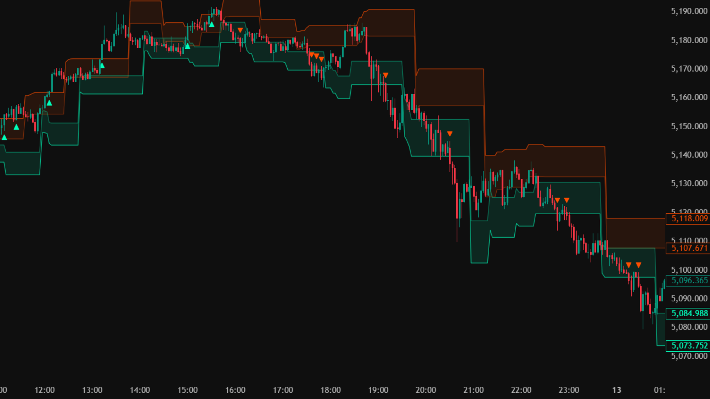
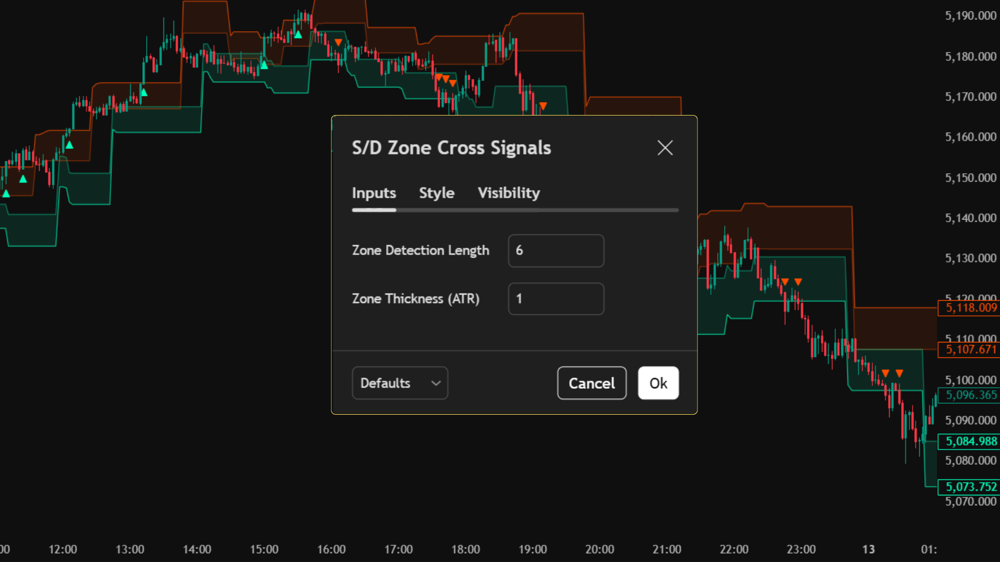
Core Use Case
- Automate the tedious process of drawing Supply and Demand zones.
- Trade confirmed momentum breakouts (not just range bounces).
- Filter out "fakeout" wicks using the dynamic ATR zone thickness.
Key Benefits
- Volatility Adaptive: Zones get thicker in fast markets and thinner in slow markets.
- High-Contrast Visuals: Built with institutional Neon Cyan and Electric Orange color palettes.
- Instant Alerts: Receive cloud notifications the exact second a zone is breached.
What You See on Chart
Signal Logic: Zone Crosses
Supply Zone Breakout (Long)
- • The algorithm maps a Red Supply Zone overhead.
- • Price rallies and fully crosses ABOVE the top of the Red Zone.
- • This indicates sellers are exhausted and buyers have taken structural control.
- • A Green Up-Triangle ▲ is printed.
Demand Zone Breakdown (Short)
- • The algorithm maps a Green Demand Zone below.
- • Price drops and fully crosses BELOW the bottom of the Green Zone.
- • This indicates buyers have capitulated and sellers have structural control.
- • A Red Down-Triangle ▼ is printed.
MT5 Platform View
Terminal Mode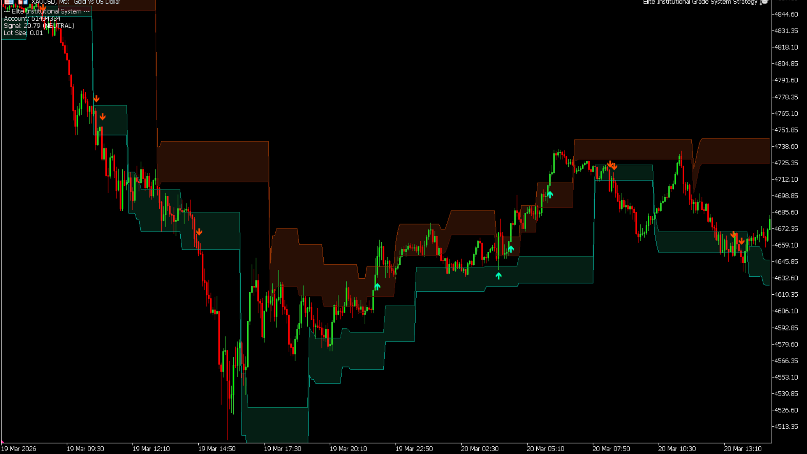
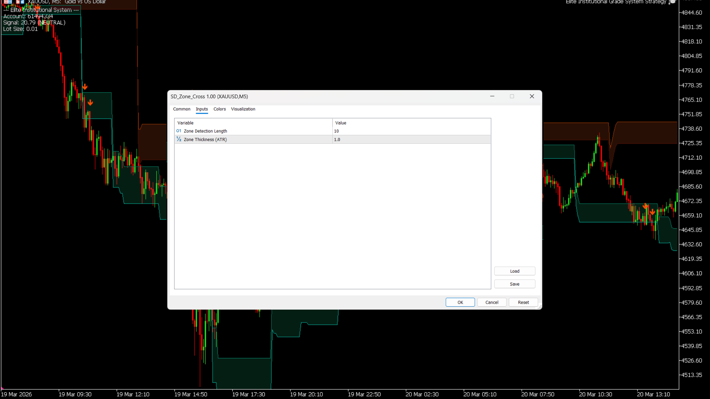
Best Practices
- • Adjust "Zone Detection Length" based on your timeframe (lower for scalping, higher for swing trading).
- • Tweak the "Zone Thickness (ATR)" multiplier to increase/decrease sensitivity. A higher multiplier requires a much stronger breakout to trigger a signal.
- • Place stop-losses securely below/above the recently broken zone.
Who is this for?
- • Price Action and Market Structure traders.
- • Breakout traders looking for confirmed shifts in momentum.
- • Traders who struggle to identify true Support and Resistance levels manually.
Summary
The S/D Zone Cross Signals indicator takes the guesswork out of market structure. By utilizing ATR logic to build dynamic supply and demand zones, it ensures you only trade high-quality breakouts when the market proves it has shifted control.
Structural Vector Rail
A dynamic, institutional-grade trendline that uses Linear Regression math to automatically anchor itself to structural support or resistance.
Standard moving averages lag behind the market. The Vector Rail solves this by calculating the true statistical slope of the trend. If the slope is bullish, the Rail automatically anchors to the lower standard deviation boundary (Support). If the slope flips bearish, it instantly re-anchors to the upper boundary (Resistance). The result is a seamless, mathematically pure trend-following band.
TradingView Interface
Live Setup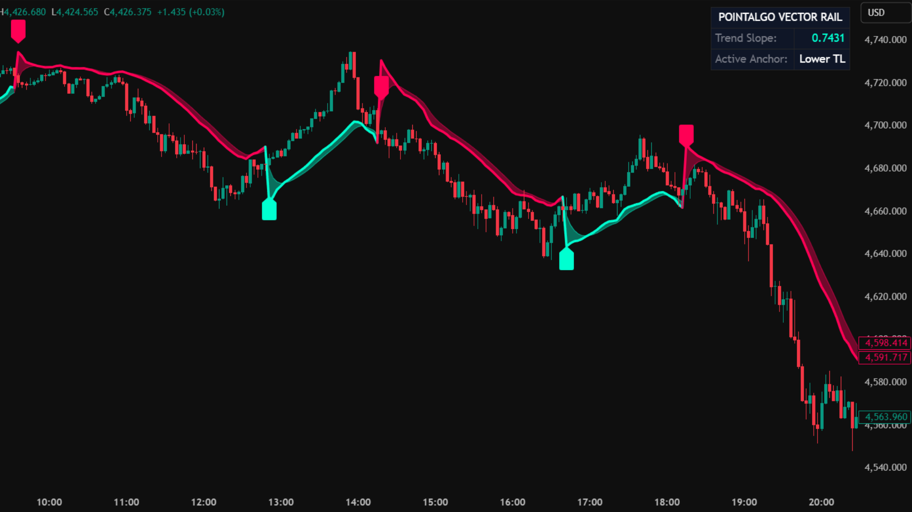
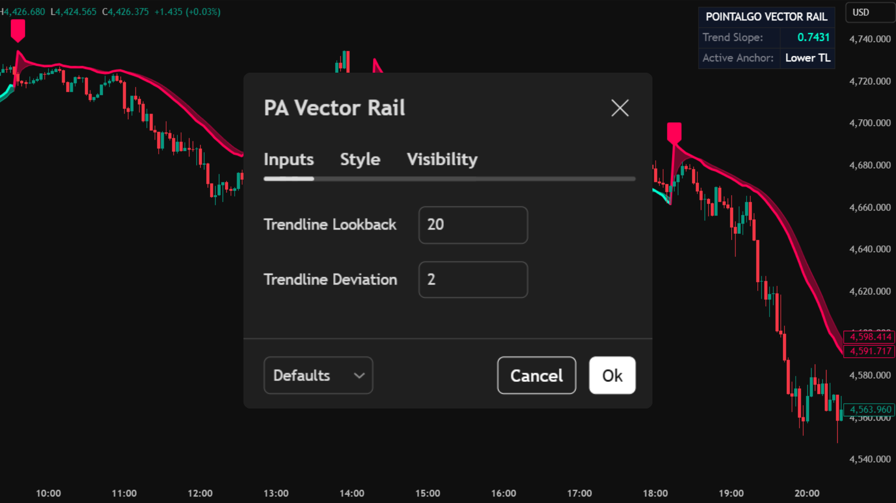
Core Use Case
- Ride massive trends without getting shaken out by minor pullbacks.
- Use the Rail as an objective, mathematical Trailing Stop Loss.
- Quickly identify the true directional bias of the market at a glance.
Key Benefits
- Zero-Lag Concept: Based on Linear Regression, which hugs price closer than an SMA/EMA.
- Visual Aura: Features a smoothed background "braid" effect in Electric Aqua and Rose for instant visual clarity.
- Live Dashboard: A built-in HUD displays the exact quantitative slope value and active anchor point.
What You See on Chart
Signal Logic: Structural Crosses
Trend Resumption (Long)
- • The underlying Linear Regression slope must be positive (Bullish).
- • Price dips below the Electric Aqua Rail to gather liquidity.
- • Price crosses back ABOVE the Rail.
- • This confirms the pullback is over and the main trend is resuming.
Trend Resumption (Short)
- • The underlying Linear Regression slope must be negative (Bearish).
- • Price rallies above the Electric Rose Rail to trap buyers.
- • Price crosses back BELOW the Rail.
- • This confirms the relief rally has failed and the downtrend is resuming.
MT5 Platform View
Terminal Mode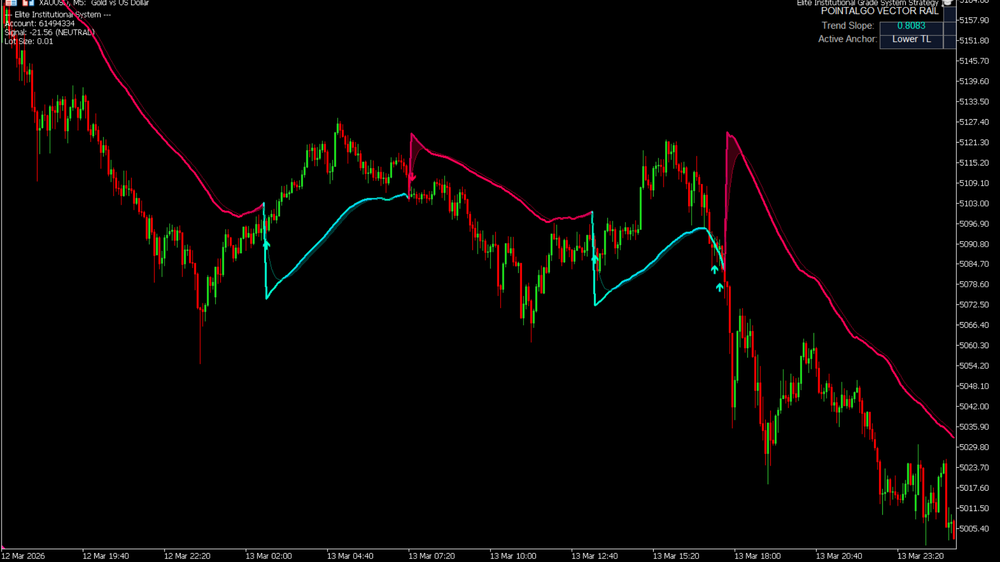
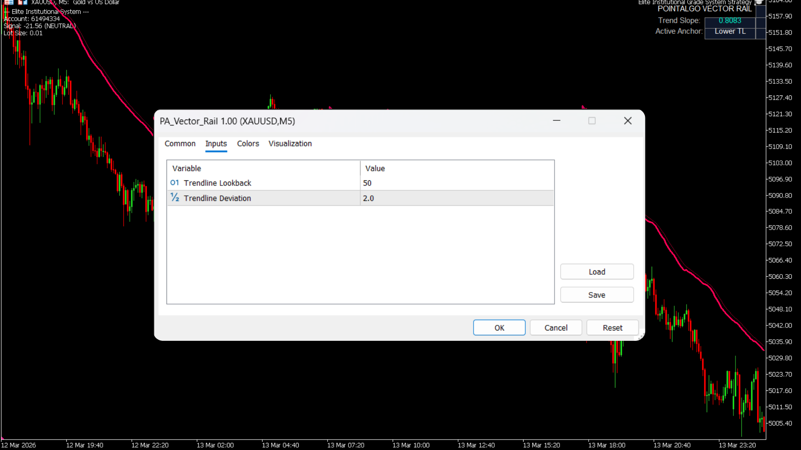
Best Practices
- • Use the Rail exclusively as a trailing stop loss. If you are Long, exit the moment a candle closes fully below the Aqua line.
- • Increase the "Trendline Deviation" multiplier if you trade volatile assets like Crypto, ensuring the Rail doesn't get clipped by wicks.
- • Ignore signals when the HUD Slope value is hovering around absolute zero (flat market).
Who is this for?
- • Trend-following and momentum traders.
- • Traders who struggle to hold winning positions and exit too early.
- • System builders needing a mathematical "on/off" switch for their directional bias.
Summary
The PointAlgo Vector Rail translates complex linear regression into a highly visual, actionable tool. By dynamically tracking statistical support and resistance, it provides the ultimate trailing boundary to keep you in major trends until they definitively break.
Trend-Aligned Engine (PA V2)
A multi-factor quantitative oscillator that merges Volatility Z-Scores, Price Mean Reversion, and Market-Neutral Momentum into a single, highly accurate directional score.
Standard RSI and MACD oscillators fail because they only look at price momentum. The Trend-Aligned Engine evaluates the market across three dimensions simultaneously. It calculates how far price has deviated from its statistical mean, filters out periods of extreme erratic volatility, and outputs a clean composite score bounded between -100 and +100.
TradingView Interface
Live Setup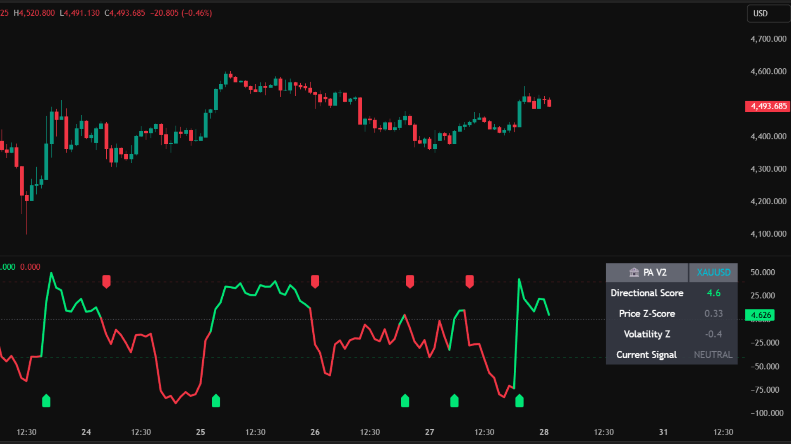
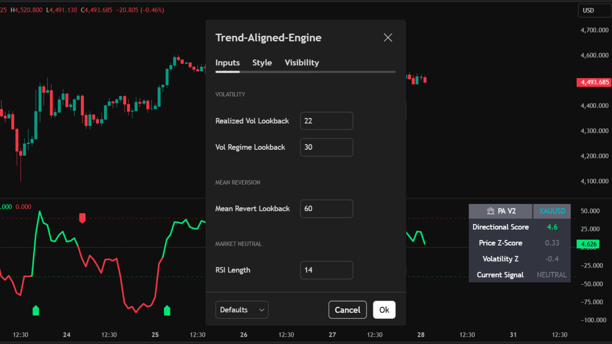
Core Use Case
- Pinpoint exact mean-reversion tops and bottoms using the +/- 40 threshold.
- Catch early trend shifts the moment the PA Score crosses the Zero-Line.
- Avoid getting chopped out by ignoring trades when the volatility background flashes orange.
Key Benefits
- Z-Score Math: Prices are normalized using standard deviations, making the indicator effective on both Crypto and Forex without tweaking settings.
- Composite Polarity: Consolidates three complex metrics into one simple, color-coded main line.
- Quant HUD: A built-in dashboard displays the exact underlying values for Volatility and Price Deviation in real-time.
What You See on Chart
Signal Logic & Interpretation
Long & Reversal Signals
- • Zero Cross Up (▲): The composite score crosses above 0. Indicates a fresh bullish trend is beginning.
- • Mean Reversion BUY: The score drops below -40 (oversold) while the Volatility Z-score remains normal (< 1.0). Price is statistically undervalued and ready to snap back up.
Short & Exhaustion Signals
- • Zero Cross Down (▼): The composite score crosses below 0. Indicates a fresh bearish trend is beginning.
- • Mean Reversion SELL: The score spikes above +40 (overbought) while the Volatility Z-score remains normal (< 1.0). Price is mathematically overextended and due for a pullback.
MT5 Platform View
Terminal Mode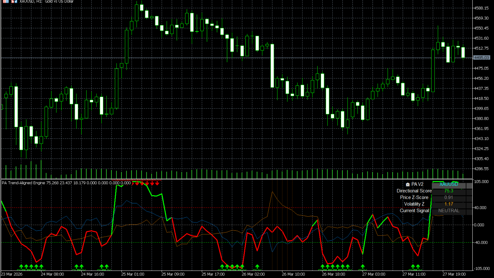
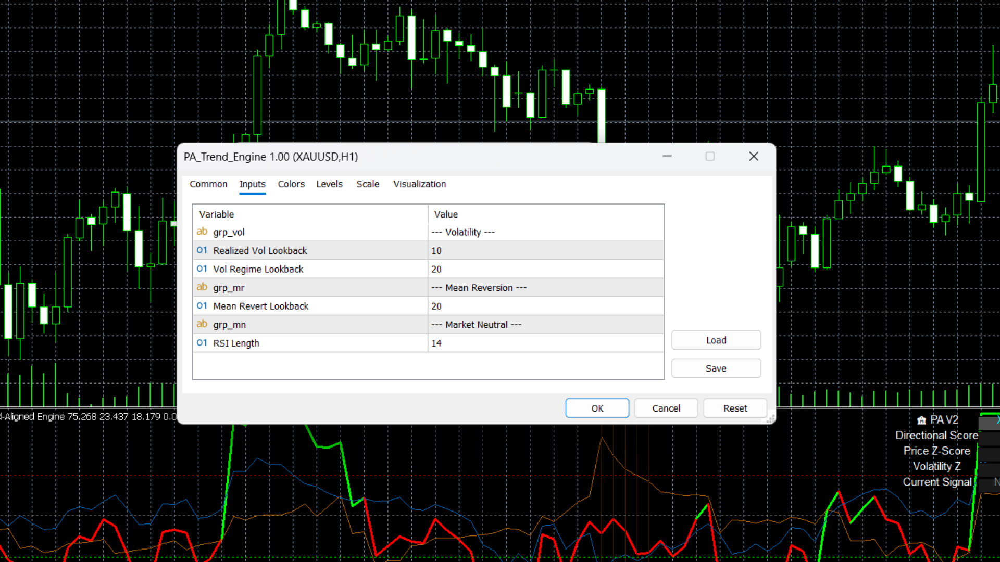
Best Practices
- • Respect the Orange: If the background flashes orange, it means volatility has spiked to standard deviation extremes (> 1.5). Do not take mean-reversion trades here, as trends can "melt up" or "melt down" beyond normal limits.
- • Pair the Zero-Cross arrows with structural breakouts from the S/D Zone Cross overlay for highly validated entries.
Who is this for?
- • Quantitative traders looking for statistical edges rather than basic momentum.
- • Mean-reversion traders who want to catch market tops and bottoms safely.
- • Traders seeking a reliable confirmation indicator to filter out fake breakouts.
Summary
The Trend-Aligned Engine takes the guesswork out of momentum trading. By constantly measuring statistical deviances in both price and volatility, it delivers clear, high-probability buy and sell signals only when the market is mathematically primed to react.
Microstructure Regime (PA-MicroStruct)
An advanced quantitative regime filter that continuously measures market Drift (Trend) and Volatility (Risk) using log returns to classify the exact state of the market.
Markets do not behave the same way all the time. Standard indicators fail because they treat a low-volatility chop exactly the same as a high-volatility trend. The Microstructure Regime calculates a 200-period rolling Z-Score for both directional drift and raw volatility, categorizing the current market into one of four distinct states: Efficient Trend, Volatile Chop, Dislocation, or Stationary Noise.
TradingView Interface
Live Setup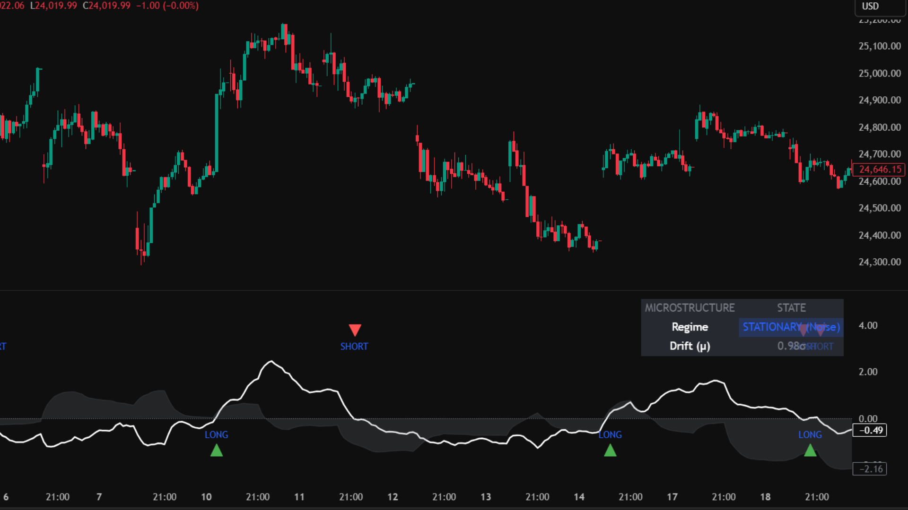
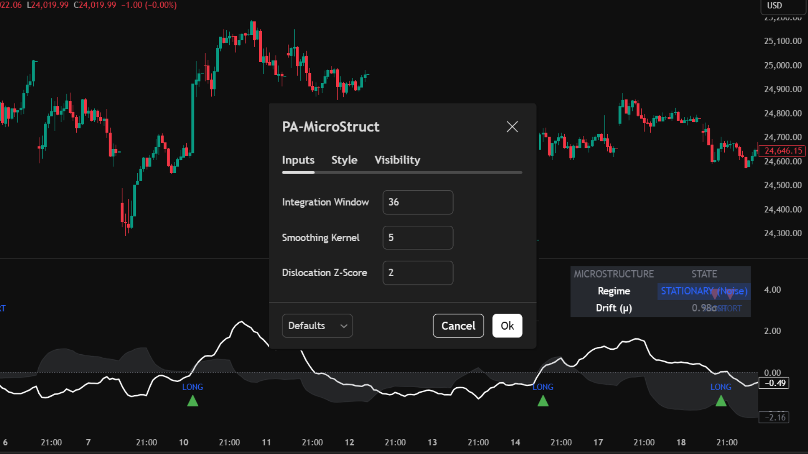
Core Use Case
- Avoid the Chop: Keep your capital safe by ignoring trade setups when the background shifts to Blue (Stationary) or Yellow (Volatile Chop).
- Capitalize on Trends: Execute your overlay breakouts aggressively only when the market is in a Green (Efficient Trend) state.
- Catch Early Shifts: The smoothed white Drift line crossing the zero boundary provides an early mathematical signal of trend initiation.
Key Benefits
- Log Return Math: Uses institutional-grade logarithmic returns (ln(close/close[1])) instead of simple price changes for highly accurate volatility estimation.
- Smoothing Kernel: A customizable EMA kernel filters out raw Z-score spikes, preventing indicator flicker and providing stable signals.
- Instant Visual Context: The color-coded background instantly tells you if your current trading strategy will work in the current environment.
Understanding the 4 Market Regimes
Chart Elements & Signals
Core Components
- • White Line (Drift/Trend): Represents the normalized directional momentum (Z-Score of μ). Above zero is bullish; below zero is bearish.
- • Gray Area (Volatility/Risk): Represents the normalized volatility (Z-Score of σ). Spikes indicate increasing market turbulence.
Drift Cross Signals
- • LONG Signal (Green Arrow): The White Drift Line crosses above the zero boundary. Bullish trend taking control.
- • SHORT Signal (Red Arrow): The White Drift Line crosses below the zero boundary. Bearish trend taking control.
MT5 Platform View
Terminal Mode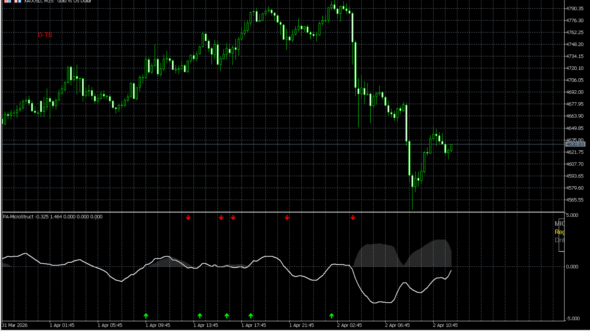
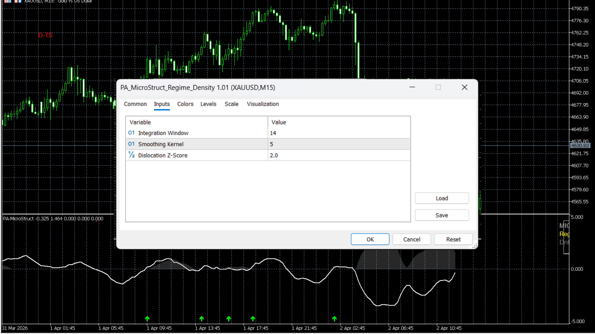
Best Practices
- • Use this indicator as your Master Filter. Only take trades on your overlays (like the Auto-Fib or S/D Zones) if the Microstructure Regime gives you a Green (Trend) or Red (Dislocation) background.
- • If you receive a trade alert but the background is Yellow (Chop), skip the trade.
Who is this for?
- • Traders who struggle with "overtrading" in choppy, sideways markets.
- • System builders looking to programmatically turn their bots on/off based on statistical market regimes.
Summary
The Microstructure Regime indicator solves the biggest problem in technical analysis: not knowing what "mode" the market is currently in. By separating risk from trend mathematically, it acts as the ultimate traffic light for your trading decisions.
Principal Component Geometry (PCG)
An institutional-grade covariance matrix model that uses Eigenvalue Decomposition to extract the true underlying market direction, filtering out noise via Spectral Entropy and Variance Concentration.
Standard indicators calculate moving averages based on a single price source (like the Close). The PCG Oscillator compares two distinct series (e.g., Close vs. HL2) to build a 2x2 Correlation Matrix. By finding the Principal Component (PC1), it isolates the dominant trend vector. It then measures market disorder (Spectral Entropy) and structural breakdowns (Reconstruction Residual) to warn you of reversals long before price action reflects them.
TradingView Interface
Live Setup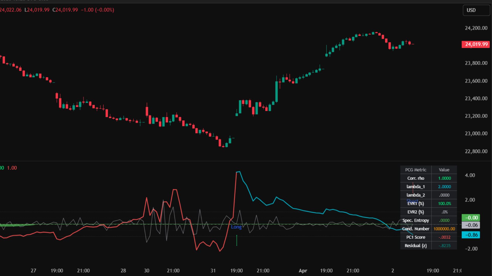
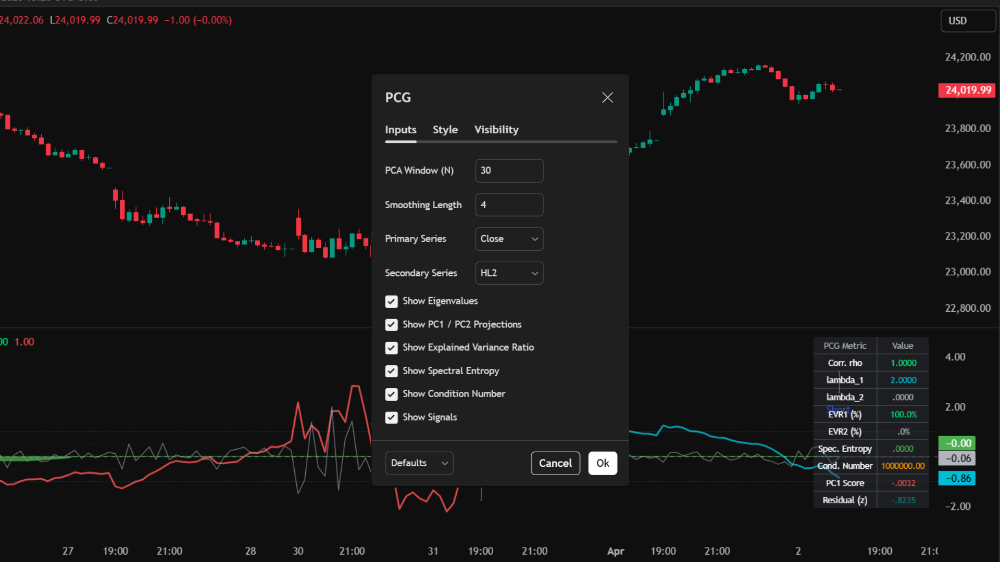
Core Use Case
- Trade the True Vector: Follow the PC1 Score (z-score) as your master trend line. When it crosses zero, the fundamental geometry of the market has shifted.
- Detect Disorder: If Spectral Entropy (the area plot) starts rising rapidly, the trend is breaking down mathematically. Tighten stops or exit.
- Spot Hidden Divergence: If price makes a new high but the PC1 Score fails to push higher (and EVR drops), a severe reversal is imminent.
Key Benefits
- Eigenvalue Math: Automatically calculates lambda 1 and lambda 2 to find the exact percentage of variance driven by the main trend versus noise.
- Z-Score Normalized: Every complex metric (Entropy, Residuals, Condition Number) is converted into a standard Z-Score, making it easy to read visually without needing a math degree.
- Real-Time Quant HUD: Displays all current matrix values, correlations, and entropy levels natively on your chart.
Deconstructing the PCG Sub-Chart
Signal Logic & Interpretation
Co-Movement Entries
- • PC1 Zero Cross (Long/Short Arrows): Clean, simple momentum shifts. Trade these when EVR is rising.
- • PCG Buy (PC Triangle): A highly restrictive signal indicating a perfect quantitative environment: EVR is high, Entropy is low, and the PC1 score is accelerating upwards.
Divergence Exits
- • PCG Sell (PD Triangle): Represents a structural breakdown. EVR is falling, Entropy is rising, and reconstruction residuals are spiking. Close long positions immediately.
MT5 Platform View
Terminal Mode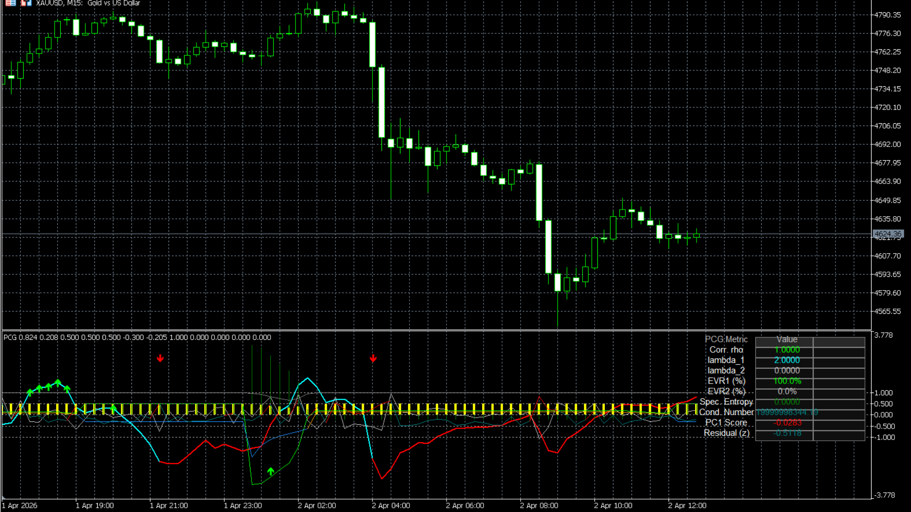
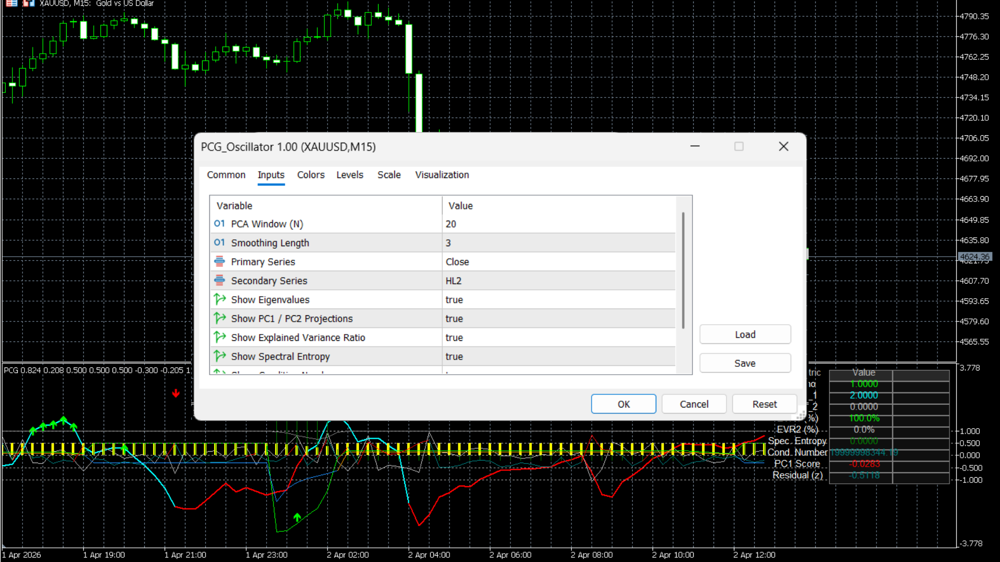
Best Practices
- • Use the **Spectral Entropy Area** as a filter. If the entropy background is green (low disorder), you can trust overlay breakouts. If it is red (high disorder), you will likely get chopped out.
- • Combine this with the **Auto-Fib Matrix**: Look for the PC1 score to cross zero exactly as price bounces off a major Fib level.
Who is this for?
- • Advanced technical analysts looking to upgrade from traditional RSI or MACD.
- • Traders who want to measure the mathematical "quality" of a trend, not just its speed.
Summary
The Principal Component Geometry oscillator proves that not all trends are created equal. By mapping the covariance between different price points, it allows you to trade the true underlying market vector while actively dodging chaotic, high-entropy chop.
Institutional Flow Matrix (PA-Flow)
A definitive Order Flow and Market Structure engine that translates tick-approximated Volume Delta, Premium/Discount zones, and Liquidity Sweeps into a unified quantitative Confluence Score.
Smart Money Concepts (SMC) are often subjective and prone to human error. The Institutional Flow Matrix removes the guesswork by tracking True Volume Delta alongside structural anomalies like Fair Value Gaps (FVGs) and real-time liquidity traps. Instead of cluttering your chart with dozens of lines, it distills these complex institutional footprints into a single, highly readable lower-pane oscillator and scoring matrix.
TradingView Interface
Live Setup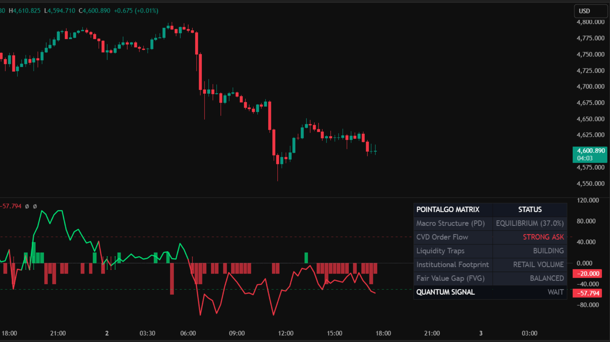
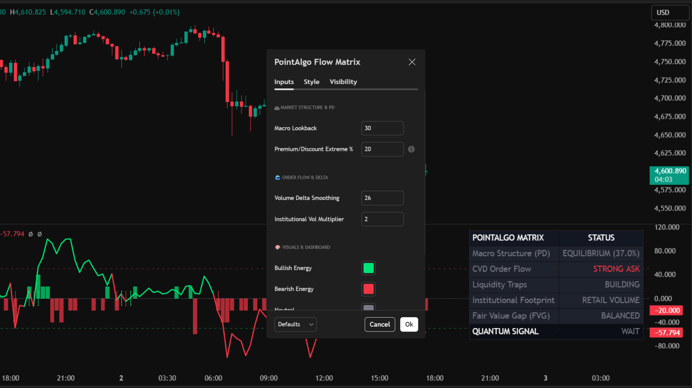
Core Use Case
- Trade the Trap: Wait for price to enter deep Discount/Premium zones (background color change) and look for Institutional Footprint spikes indicating accumulation or distribution.
- Validate Breakouts: A structural breakout on the main chart should always be backed by a strong Volume Delta surge in the same direction.
- Zero-Cross Scalping: Utilize the synchronized Delta Zero-Cross arrows for precision entries when order flow officially shifts polarity.
Key Benefits
- Tick-Approximated CVD: Splits raw volume into buying and selling pressure based on high/low ranges, offering true visibility into aggressive market orders.
- 5-Point Matrix Score: Automatically grades the market (-5 to +5) by scoring Premium/Discount location, FVG presence, Delta momentum, and Liquidity Sweeps simultaneously.
- Synchronized Alerts: Prevents fake-outs by allowing you to require Confluence Score alignment before triggering a Delta crossover alert.
Deconstructing the Matrix
Signal Logic & Alerts
Delta Zero Cross
Large arrows appear precisely on the equilibrium (0) line when Order Flow officially flips from negative to positive, or vice versa.
*Pro Tip: Use the "Require Confluence Sync" toggle in settings to ensure you only get notified of these crosses when the background Matrix Score agrees with the direction.
Strong Buy / Sell Triggers
The ultimate Quantum Signal fires when the Matrix Score hits a +/- 3 threshold. This means at least 3 critical institutional factors (e.g., Deep Discount + Sweep + Bullish FVG) have aligned perfectly.
MT5 Platform View
Terminal Mode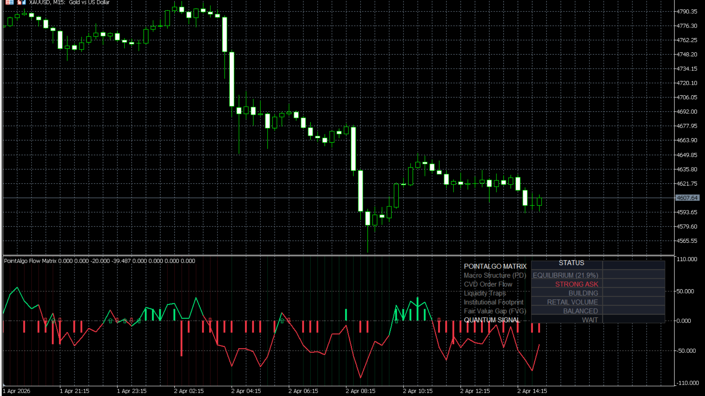
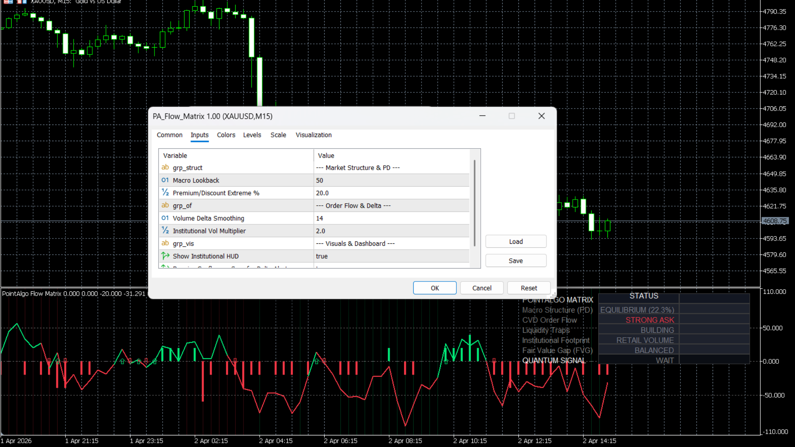
Best Practices
- • The Institutional HUD on the right side of your chart updates tick-by-tick. Glance at this before entering any trade to ensure you are not buying in Premium or selling in Discount.
- • Combine this with the S/D Zone Cross Signals. A Supply Zone test combined with a "Sell-Side Swept" HUD reading is an ultra-high probability short setup.
Who is this for?
- • ICT and SMC traders who want to automate their structural mapping and validate their biases with actual volume data.
- • Order flow traders who need a clean, visual representation of buying/selling pressure without using complex footprint charts.
Summary
The Institutional Flow Matrix turns the chaos of market structure and volume delta into clear, actionable data. By mathematically scoring confluences like sweeps and imbalances, it ensures you only trade when the smart money is decisively showing its hand.
Systematic Factor Engine (PA-SFE)
An institutional-grade portfolio engine that tracks the four pillars of quant investing—Value, Momentum, Quality, and Low-Volatility—merging them into a single predictive composite score.
Retail indicators almost exclusively rely on Momentum. Hedge funds, however, use Factor Investing. The Systematic Factor Engine brings "Smart Beta" to your charts. It simultaneously calculates if an asset is fundamentally cheap (Value), trending strongly (Momentum), exhibiting stable underlying metrics (Quality), and minimizing risk (Low Volatility). It also tracks portfolio drift, alerting you exactly when it's statistically necessary to rebalance.
TradingView Interface
Live Setup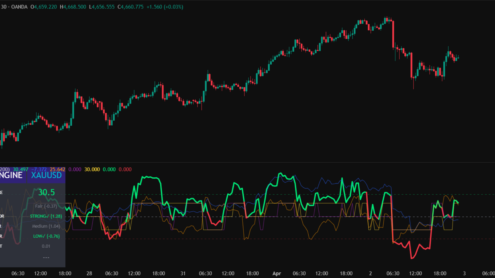
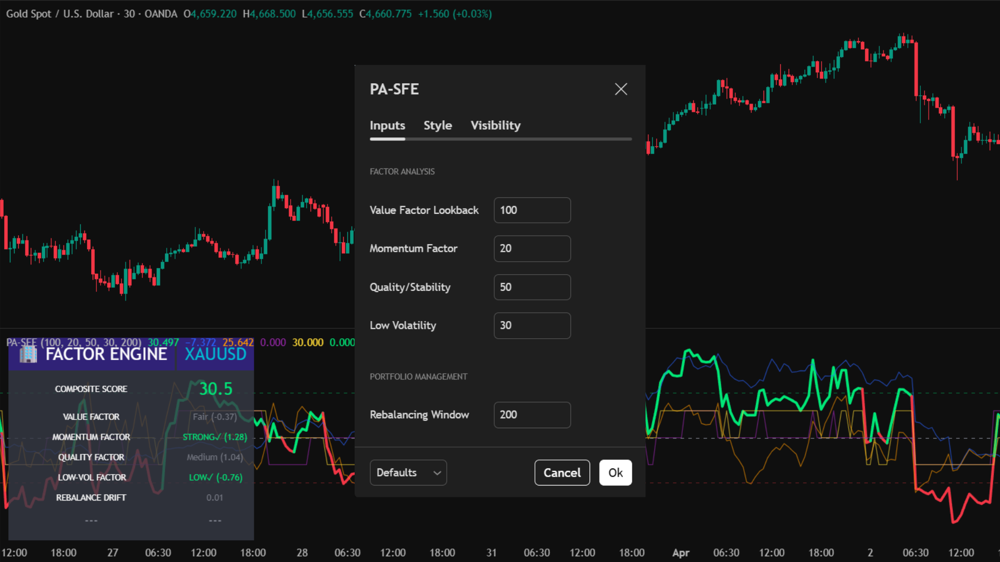
Core Use Case
- High-Conviction Entries: A "BR LONG" or "BR SHORT" signal only fires when all 4 independent mathematical factors agree. These are exceptionally high-probability structural setups.
- Risk Parity Rebalancing: Don't guess when to take profits on a long-term hold. The indicator alerts you with a Rebalance Signal when portfolio drift exceeds 1.5 standard deviations.
- Macro Trend Following: Keep your eye on the thick main Composite line. As long as it is above 0, the overall multi-factor tailwind is bullish.
Key Benefits
- Weighted Z-Score Normalization: Each factor is normalized via Z-Scores and custom-weighted (30% Value, 25% Mom, 25% Qual, 20% Low-Vol) to prevent highly volatile moves from skewing the data.
- Massive Factor HUD: Features a 14-row dashboard that breaks down the exact status, Z-score, and conviction grading of every underlying factor in real-time.
- Multi-Disciplinary: Replaces the need to have 4 different oscillators on your chart, freeing up screen space while providing deeper insights.
Deconstructing the Sub-Chart
Signal Logic
FACTORS LONG
The ultimate bullish alignment. Occurs only when the asset is fundamentally cheap, trending up, showing stable high-quality variance, and operating in a low-risk volatility regime.
FACTORS SHORT
The ultimate bearish alignment. Occurs when an asset is fundamentally overvalued (expensive), losing momentum, acting erratically (low quality), and flashing high-risk volatility spikes.
MT5 Platform View
Terminal Mode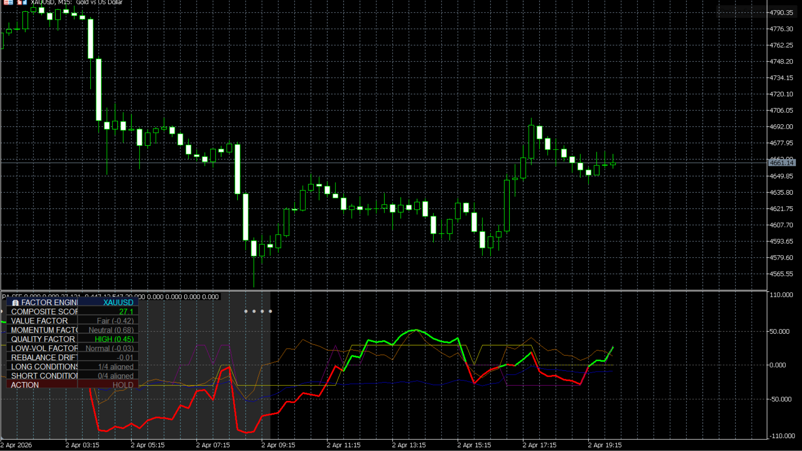
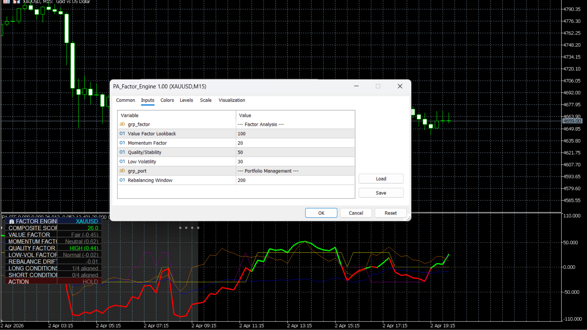
Best Practices
- • Swing / Macro Focus: Because it relies on deep historical statistical averages, this indicator is vastly superior on higher timeframes (4H, Daily, Weekly) than on 1-minute charts.
- • Use the Rebalance background (gray) as a prompt to take partial profits, even if a direct reversal signal hasn't fired yet.
Who is this for?
- • Swing traders and long-term investors looking to build systematic, rules-based portfolios.
- • Traders who want to avoid "buying the top" by ensuring fundamental Value and Quality factors support the Momentum.
Summary
The Systematic Factor Engine levels the playing field between retail traders and institutional quants. By aggregating Value, Momentum, Quality, and Volatility into one actionable dashboard, it provides mathematical conviction to your largest, most important trades.
Quant AI Engine (PA-GTP)
A real-time "Deep Think" terminal that synthesizes Z-Score math, Institutional Order Flow, and Liquidity Sweeps into a readable AI verdict.
Logic Response Demo
Live ReasoningQuant State
Monitors TTM Squeezes and Z-Score dislocations. It knows when kinetic energy is storing and when a mean-reversion bounce is mathematically mandatory.
Volume Anomaly
Scans for RVOL (Relative Volume) spikes above 200%. It separates retail noise from institutional order flow injections instantly.
Deep Think PA
The logic core. It identifies BSL/SSL sweeps and classifies rejections versus legitimate institutional breakouts.
MT5 Terminal View
Static Analysis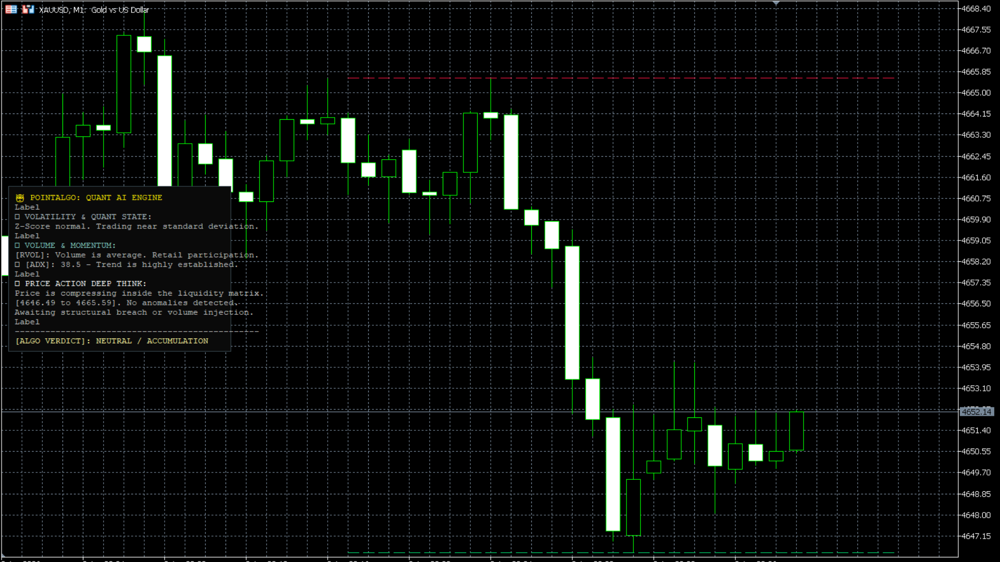
Interpreting the Verdict
Algorithm Summary
The Quant AI Engine acts as your institutional co-pilot. It processes thousands of data points across volatility, volume, and structure every second to provide you with a human-readable summary of the current market state.